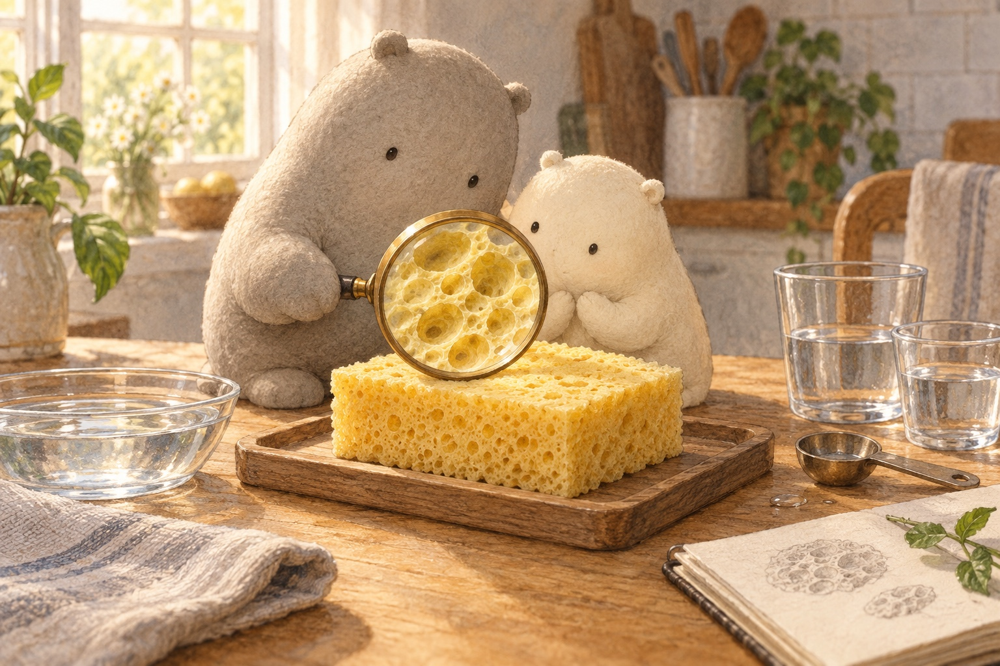
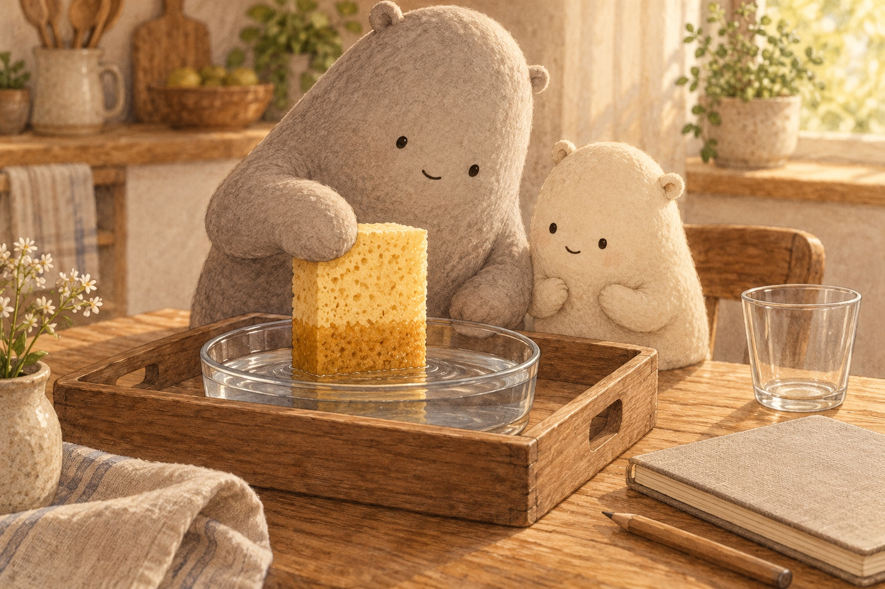
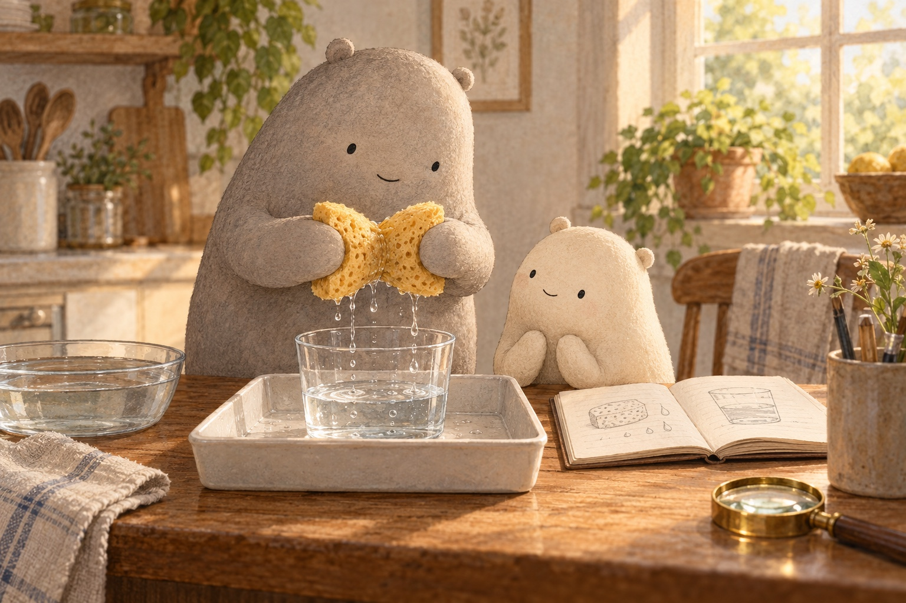
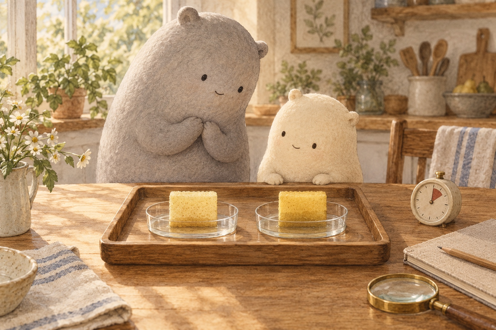
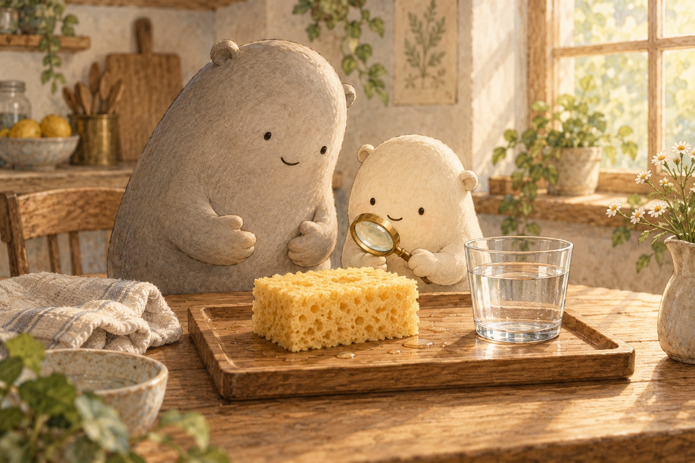
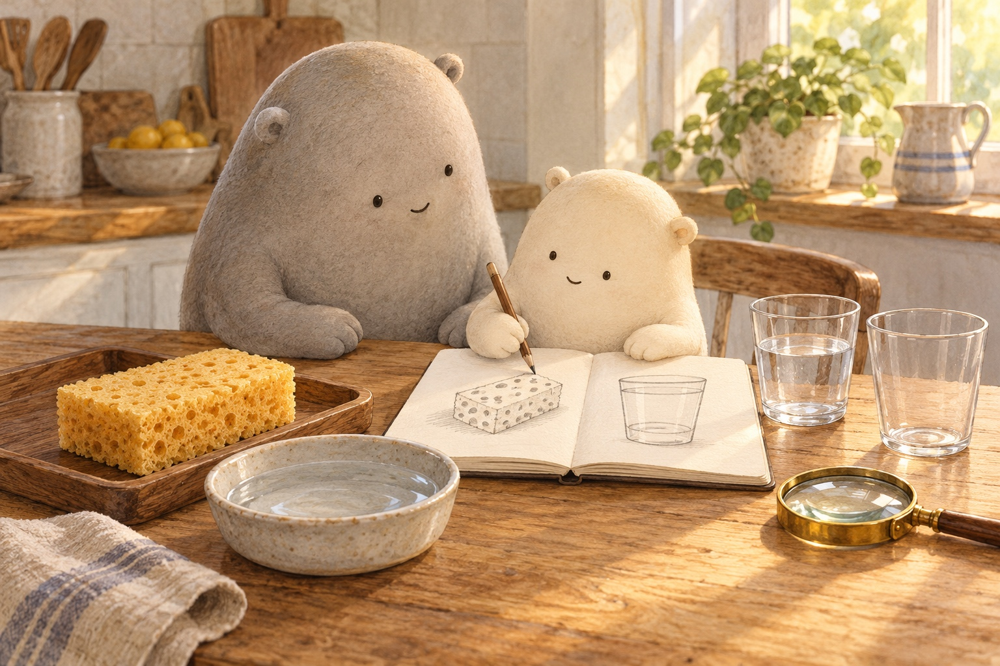

Where does the water go, and how much can one sponge hold?

Where shall we look?
Tiny holes lead into connected spaces.
What is inside all those holes?
The magnifier makes the sponge’s open spaces easier to notice.
A little explanation & something to try
A kitchen sponge has pores: tiny holes leading into connected spaces. Water can travel through these spaces, like little tunnels. Most kitchen sponges are made by people from cellulose, a plant fibre, or foam. Many sea sponges are simple animals; this kitchen sponge is a made object.
Try this. Find two holes, then imagine a path between spaces inside.

Water clings to the walls and creeps into narrow gaps.
How does water move into the sponge?
The sponge’s wet edge grows darker as it touches water.
A little explanation & something to try
Water clings to the sponge’s walls and creeps along narrow gaps. We call this spreading wicking. To absorb means to take water in. Some water is held inside the connected spaces, so you cannot see all of it from outside.
Try this. With Big leading, use a new, clean sponge, a tray, two clear cups, and a measuring spoon. Dip, lift, and squeeze over the empty cup. Wipe up drips so the floor stays dry.

A squeeze makes the spaces smaller and pushes water out.
Why does a squeeze bring the water back?
Drops fall from the squeezed sponge into the cup.
A little explanation & something to try
Squeezing presses the sponge’s walls closer together. There is less room inside, so water is pushed out. Let go, and the springy material opens back up. It can soak up water again.
Try this. Compare the sponge’s shape during a squeeze and after you let go.

Same-size pieces, the same water, and the same time make a fair test.
Would a damp sponge soak up a spill faster?
Two same-size pieces meet equal little spills for the same time.
A little explanation & something to try
A damp sponge often starts soaking faster than a bone-dry one. Damp means a little wet, not full of water. Compare fairly: use the same kind and size of sponge, equal amounts of water, and the same time. Look at how much of each spill is left.
Try this. Predict which spill will shrink faster, then compare what is left.
Where did the water go?
A Kitchen Sponge
A question full of holes
Little Wonderer peered through a magnifier at a kitchen sponge. A sponge is a soft material that can take in water. “It is full of holes!” Little said. “Those holes are pores,” said Big. Inside, many spaces connect like little tunnels. Little wondered where a spill would go.
How could connected holes help water move?
Water finds a way
Big dipped the sponge into a shallow dish. Its lower edge grew darker. Water clung to the sponge’s walls and crept into narrow gaps. This slow spreading is called wicking. To soak up, or absorb, means to take water in. The water was entering the spaces inside.
What does the darker wet edge help Little notice?
A squeeze into the cup
Big lifted the sponge over an empty cup. “Where is the water now?” asked Little. Big gave a gentle squeeze: a press from both sides. The spaces became smaller, pushing water out. Drops fell into the cup. The water had not vanished. Little could see it again.
What evidence shows that the water did not vanish?
Two little spills
Next they compared two same-size pieces. One was bone-dry; the other was damp, with a little water already inside. Each met the same small spill for the same time. The damp piece soaked up its spill faster. That often happens, but different sponges can behave differently. A fair test helps us find out.
Why keep the piece size, water, and time the same?

Open again
Big let go after another squeeze. The sponge began to spring back, returning to its open shape. Its spaces opened too, ready to take in water again. “Smaller, then open,” Little said. The sponge changed shape, but the water stayed water. Little sketched the cup beside it.
How does springing back help the sponge soak again?

A question to keep
“Is our sponge an animal?” Little asked. “Sea sponges are simple animals,” said Big. “People make most kitchen sponges from cellulose, a plant fibre, or foam.” Little drew holes in the notebook. “How much could ours hold?”
How is this kitchen sponge different from a sea sponge?
For a complete still story, download the foldable book.
Compare a little water
For a comparison, put >, <, or = in the circle. For rounding, write the nearest ten.
A squeeze makes the spaces smaller and pushes water out.
Choose one answer and explain how the tens and ones helped you.
1. Little squeezes 32 millilitres of water into one cup and 47 into another. Which symbol compares the amounts?
32 ○ 47
A small hint
Compare the tens first. Three tens is less than four tens.
2. Big measures 63 millilitres of water squeezed from a sponge. What is that amount rounded to the nearest ten?
63 → nearest ten: ___
A small hint
Find the nearby tens, 60 and 70. The ones digit is less than 5.
3. A sponge soaks up 58 millilitres and a cloth soaks up 51 millilitres in a test. Which symbol compares the amounts?
58 ○ 51
A small hint
The tens match. Compare 8 ones with 1 one.
4. Little counts 25 visible holes in a close-up sponge sketch. What is that count rounded to the nearest ten?
25 → nearest ten: ___
A small hint
25 is halfway between 20 and 30. When the ones digit is 5, round up.
5. Little counts 76 drops in one cup and 89 in another after a squeeze. Which symbol compares the counts?
76 ○ 89
A small hint
Compare 7 tens with 8 tens before looking at the ones.
6. The measuring cup holds 97 millilitres from several sponge squeezes. What is that amount rounded to the nearest ten?
97 → nearest ten: ___
A small hint
The nearby tens are 90 and 100. A ones digit of 7 rounds up.
Give a sponge test its words
Write one clear command for the sponge test. Say your sentence first if you like.
Water clings to the walls and creeps into narrow gaps.
First, …tell how to dip the sponge in the dish
A squeeze makes the spaces smaller and pushes water out.
Then, …tell how to squeeze it over the cup
Let go, and the springy sponge opens back up.
At the end, …tell how to let go and watch the shape
Draw the sponge, its holes, and the cup. Add an arrow for the water.
SAY IT FIRST. THEN DRAW OR WRITE.
A temporary space. Copy your words before closing or reloading; they are not saved or sent.
dipliftsqueezecupholeswaterreleasenotice
Does your sentence tell what to do, with a command such as Dip, Lift, Squeeze, or Release?
A sponge, a dip, and a squeeze
A water path worth keeping
Use words, pointing, or a sketch to tell where the water went. How did the spaces change?
You can stop here.
Follow water through a sponge
Predict. Where will the water go when the sponge touches it?
Arrange in words. Set a water dish, a kitchen sponge, and an empty measuring cup on a tray. Choose a bone-dry or damp sponge.
Activate. Dip the sponge. Water clings to the walls and creeps into connected spaces. Lift it over the cup and squeeze. The smaller spaces push water out. Release it; the sponge springs back.
Notice. A damp sponge often starts soaking faster. Compare same-size pieces, equal dish water, and the same time. Look at how much water is left in each dish.
Water collected from a damp sponge includes the water it had at the start. What would you measure next?
Quiz
Answer key
Quiz 1
Water enters connected spaces inside the sponge. It clings to the walls and creeps into narrow gaps.
Quiz 2
Squeezing makes the spaces smaller and pushes water out. Releasing the sponge lets it spring back open.
Quiz 3
Use same-size pieces of the same kind of sponge, equal amounts of water, and the same time. Compare the water left in the spills.
Quiz 4
Most kitchen sponges are made by people from cellulose or foam. Many sea sponges are simple animals.